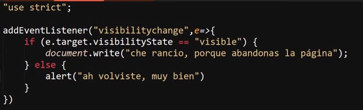

Visibility Change
Se trata de una API especializada en detectar el si la pestaña de la paguina se encuetra visible en ese momento o no, en otras palabras, permite detectar el si el usuario actualmete se encuetra visualizando la pestaña de la paguina o si por otra lado se encuentra visualizando otra pestaña diferente.
Su funcionamineto es muy simple, se basa en el evento "visibilitychange" el cual se dispara cada vez que el usuario cambia de pestaña en el navegador, esta API posee dos valores posibles, los cuales son:
-
Hidden: el cual se aplica mientras la pestaña actual de la paguina no este enfocada en pantalla, si no en su lugar lo este otra pestaña
-
Visible: Este valor se aplica mientras la pestaña de la paguina se encuetre seleccionada como la pestaña actual del navegador
De ese modo para aplicar la api se requere de la inicialización del evento "visibilitychange", luego a la función que ejecutara el escucha de eventos se le asigna un dato (e), por ultimo se accede al metodo ".visibilityState", esto se puede lograr de dos formas, ya sea definiendo como "e.target.visibilityState" o como "Document.visibilityState", ambos casos tiene el mismo efecto.
Ejemplo

En este ejemplo se puede obcervar el como se inicializa el escucha de eventos con "visibilitychange", se le pasa el dato "e" a la función flecha y esta segun cual sea el valor del metodo "visibilityState" mostrara un mesaje u otro, de ese modo cuando el usuario abandone la pestaña saltara un mesaje, y luego saltara una alerta cuando este retorna.
De esta manera se pueden realizar una acción en caso de que el usuario abandone o ingrese a la pestaña de la paguina de forma dinamica.